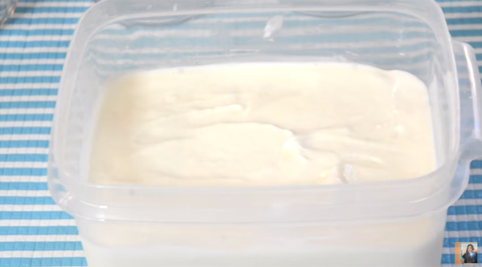

จะหน้าไหนเมืองไทยก็ร้อน ! ชวนมาทำขนมดับร้อนด้วยวิธีทำไอศกรีมกะทิสด สูตรไอศกรีมไม่ใช่เครื่อง>ก็ทำได้ รสชาติเข้มข้นหวานมัน หอมกลิ่นกะทิ กินตอนไหนก็ใช่เลย
ไอศกรีมกะทิ (Coconut Milk Ice Cream) เมนูไอศกรีมที่ครองใจคนไทยมายาวนาน ต่อให้มีไอศกรีมรสชาติแปลกจากทั่วโลกมายั่วน้ำลาย แต่ไอศกรีมกะทิสดชาวบ้าน ๆ นี่แหละที่ยังครองใจคนไทยทุกคน ส่วนใครที่สนใจวิธีทำไอศกรีมกะทิโฮมเมด วันนี้กระปุกก็มีสูตรไอศกรีมกะทิจาก RinS CookBook (#Rinscookbook) ที่มาพร้อมเคล็ดลับทำให้ไอศกรีมกะทิมีความเข้มข้น เนื้อแน่น แถมยังบอกวิธีทำไอศกรีมกะทิแบบไม่ใช้เครื่องด้วย แหม... แค่คิดก็สนุกแล้วเนอะ มาลองทำกันเลยดีกว่า
ส่วนผสม ไอศกรีมกะทิสด
◆ ไข่ขาว 1 ฟอง
◆ ใบเตย 3-4 ต้น
◆ น้ำตาลทราย 1+1/4 ถ้วย
◆ เกลือ 1/2 ช้อนชา
◆ แซนแทนกัม (Xanthan Gum สารให้ความหนืด) 1/8 ช้อนชา (ใส่หรือไม่ใส่ก็ได้)
◆ น้ำมะพร้าวน้ำหอม หรือน้ำมะพร้าวอ่อน 1 ถ้วย
◆ กะทิ 3 ถ้วย
◆ วิปปิ้งครีม 1+1/2 ถ้วย
◆ เนื้อมะพร้าวอ่อน (ใส่หรือไม่ใส่ก็ได้ หรือเก็บไว้ใส่แบบโรยหน้าก็ได้)
◆ ท็อปปิ้งตามชอบ เช่น ข้าวเหนียว ถั่วแดง ข้าวเหนียวมูล ลูกชิด เนื้อมะพร้าวอ่อน ถั่วลิสง ข้าวโพด
วิธีทำไอศกรีมกะทิสด (แบบใช้เครื่อง)


วิธีทำไอศกรีมกะทิสด (แบบไม่ใช้เครื่อง)
► นำส่วนผสมใส่ในภาชนะสเตนเลส แช่ช่องฟรีซ ทุก ๆ 30 นาทีแล้วเอาออกมาคนให้เข้ากัน ประมาณ 10 ครั้ง หรือ 5 ชั่วโมง จะออกมาใกล้เคียงกับไอศกรีมที่ใช้เครื่อง
◆ กะทิ 3 ถ้วย
◆ วิปปิ้งครีม 1+1/2 ถ้วย
◆ เนื้อมะพร้าวอ่อน (ใส่หรือไม่ใส่ก็ได้ หรือเก็บไว้ใส่แบบโรยหน้าก็ได้)
◆ ท็อปปิ้งตามชอบ เช่น ข้าวเหนียว ถั่วแดง ข้าวเหนียวมูล ลูกชิด เนื้อมะพร้าวอ่อน ถั่วลิสง ข้าวโพด
วิธีทำไอศกรีมกะทิสด (แบบใช้เครื่อง)
► เทน้ำมะพร้าวลงไปในหม้อ นำขึ้นตั้งไฟกลางอ่อน ตามด้วยใบเตย
► พอร้อนใส่เกลือและกะทิลงไปคนให้เข้ากันจนเกลือละลาย ต้มจนเดือดอ่อน ๆ พอมีฟองอากาศใส่น้ำตาลทรายลงไปครึ่งหนึ่งก่อนแล้วคนให้เข้ากัน
► พักทิ้งไว้จนเย็นประมาณ 30 นาที (ถ้านำหม้อไปแช่ไว้ในน้ำเย็นก็จะทำให้ส่วนผสมเย็นเร็วขึ้น)
► ผสมน้ำตาลทรายที่เหลือกับไข่ขาว ตีให้เข้ากันจนตั้งยอดอ่อน
► ใส่วิปปิ้งครีมเย็นจัดลงไปตีให้ขึ้นฟูเป็นเนื้อครีม (สามารถใช้เครื่องตีไฟฟ้าก็ได้)
► นำส่วนผสมกะทิที่เย็นแล้ว (ประมาณ 20 องศาเซลเซียส) เทลงในส่วนผสมไข่ขาวผ่านตะแกรง
► จากนั้นใส่สารให้ความหนืดลงไปคนให้เข้ากัน รอจนอุณหภูมิประมาณ 20 องศาเซลเซียส
>

► นำโถไอศกรีมไปแช่ช่องฟรีซประมาณ 24 ชั่วโมง ใส่ส่วนผสมไอศกรีมลงไป ใช้เวลาประมาณ 1/2 ชั่วโมง พร้อมเสิร์ฟ

► หรือถ้าหากต้องกินแบบเย็น ๆ ก็ตักใส่ภาชนะมีฝาปิด นำไปแช่ในช่องฟรีซประมาณ 3-4 ชั่วโมง พร้อมเสิร์ฟ คู่กับท็อปปิ้งต่าง ๆ ตามชอบ
วิธีทำไอศกรีมกะทิสด (แบบไม่ใช้เครื่อง)
► นำส่วนผสมใส่ในภาชนะสเตนเลส แช่ช่องฟรีซ ทุก ๆ 30 นาทีแล้วเอาออกมาคนให้เข้ากัน ประมาณ 10 ครั้ง หรือ 5 ชั่วโมง จะออกมาใกล้เคียงกับไอศกรีมที่ใช้เครื่อง
ลั้ลลา... อยากลองทำไอศกรีมกะทิสดแบบนี้กับเขามานานแล้ว แถมยังเลือกใส่ท็อปปิ้งได้ล้นหลามตามชอบอีกด้วย ใครพลาดบอกเยว่าจะเสียดาย
ขอขอบคุณข้อมูลและภาพประกอบจาก
Rin Silpachai
Copyright © EAT&EAT nc. สงวนลิขสิทธิ์